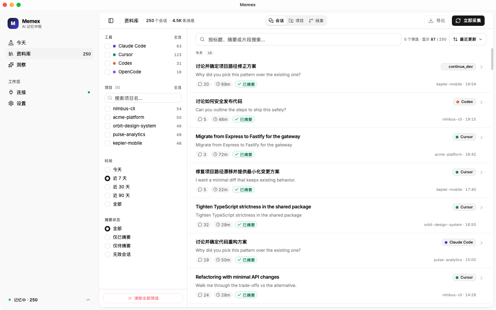
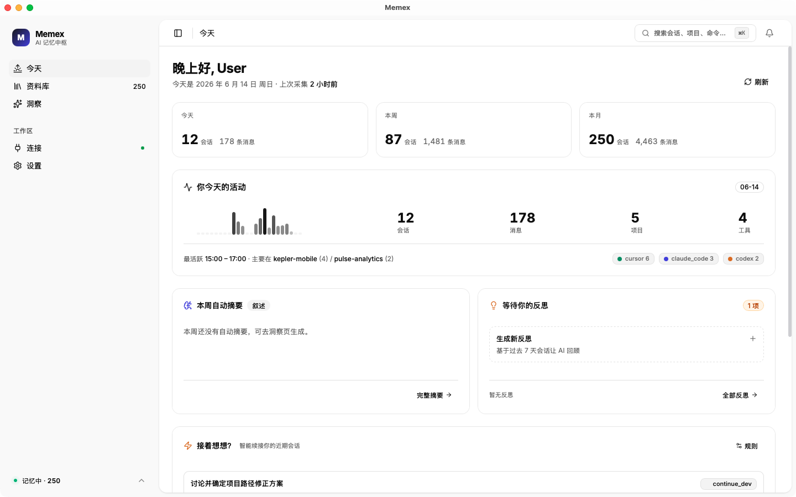

MEMEX · v1.0.3 · macOS Apple Silicon
你的 AI 记忆，
只属于你自己
一份本地数据库，把 Claude Code、Cursor、Codex、OpenCode、Aider 全部接回你自己的电脑——不上云、不外传、不丢一句。
问题
你的 AI 记忆，
被关在 5 个盒子 里
Claude Code
·
Cursor
·
Codex
·
OpenCode
·
Aider
每个工具一个孤岛。你的对话散在五处，没有一份完整记忆。
代价
你的时间，
一半花在重新解释自己
-
01
上周和 Cursor 拍板的架构方案今天想不起来在哪聊过——开三个 Cursor session 翻一小时
-
02
Claude 三个月前帮你写过的脚本早已埋在 2,000 条对话深处——只能重写一次
-
03
同样的上下文，给同样的模型一遍又一遍——你的工作日，是 prompt 复读日
Memex，
本地优先的跨大模型会话记忆中枢
它不替你说话——它替你 记住。
100%
本地数据库
6
个适配器
4
层智能摘要
0
个云端调用
01
连接。
六大 AI 编辑器自动接入
你新开的每一段对话，Memex 在后台默默归档进本地 SQLite。 你不用改任何习惯，也不用复制粘贴一次。
- ✓ 事件驱动，2 秒延迟入库，零轮询
- ✓ Claude Code · Cursor · Codex · OpenCode · Aider · Cline
- ✓ 一键注入 MCP / Skill / Hook 到每个 IDE
Claude Code
Cursor
Codex
OpenCode
Aider
Cline
02
回溯。
几千条对话，秒级命中
SQLite 全文索引 + BM25 排序 + 中文 bigram。 Insights 自动聚合主题与决策， 让你一眼看清这周做了什么、上个月卡在哪里。
- ✓ Library 全文搜索，四维筛选
- ✓ Insights 自动生成日 / 周 / 月报
- ✓ 本地 Ollama 摘要，离线可用

03
延续。
早八点到深夜十一点，同一条主线
Today 跨项目 KPI 一眼到位。 工具切换不再断思路——所有项目，同一份记忆。
竞品 · CLOUD-FIRST
数据住在他们家
MEMEX · LOCAL-FIRST
数据住在你硬盘

行动
从今天起，
你的记忆，只属于你自己
下载 dmg · 拖进 Applications · 两行命令 · 三分钟装回所有 AI 对话。
1
下载
Memex_1.0.3_aarch64.dmg 并拖入 /Applications
2
sudo xattr -cr /Applications/Memex.app
3
启动 → 自动接入所有历史 AI 对话